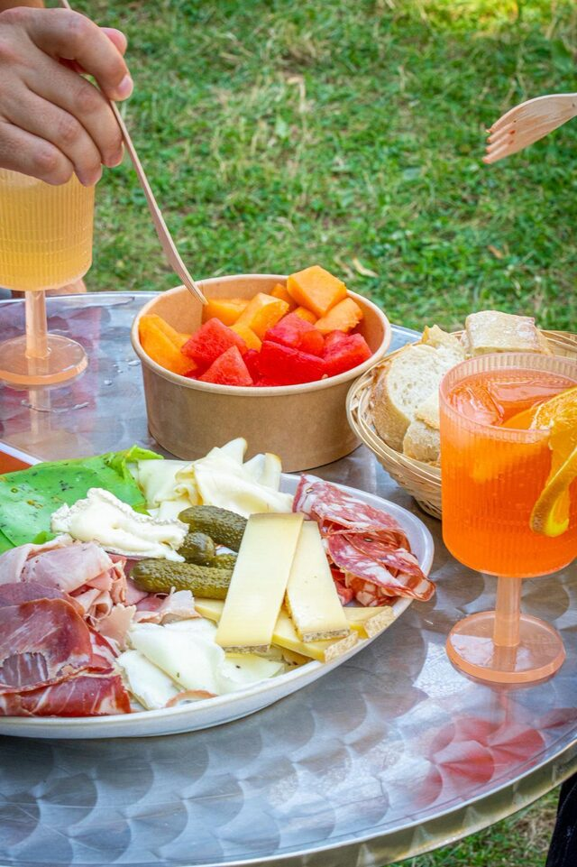

La saison 2026 se termine bientôt, et la question revient déjà : quand rouvre la guinguette en 2027 ? Voici ce qu'on sait, ce qu'on prévoit, et ce qui n'est pas encore décidé. Autant le dire tout de suite : à ce stade, rien n'est confirmé.
Ce qui est prévu — et ce qui ne l'est pas
La Guinguette du Dispensaire est une adresse de saison. Elle vit de juin à octobre, dans le Parc du Dispensaire à Sartrouville, et elle ferme le reste de l'année. Pour 2027, nous visons le même rythme : une réouverture prévue en juin 2027, pour une saison qui irait jusqu'en octobre.
« Prévu » est le mot juste. Le calendrier dépend de plusieurs choses qui ne sont pas encore arrêtées : les autorisations, le montage du site dans le parc, la météo du printemps et le recrutement de l'équipe. Tant que la date n'est pas fixée, nous ne l'annoncerons pas. Nous préférons ne rien promettre plutôt que de faire déplacer quelqu'un pour rien.

Ce qui reviendra, sans grande surprise
L'esprit ne changera pas. Ce qui a fait la saison 2026 devrait revenir en 2027 :
- Les concerts et les animations. En 2026, il y a eu des concerts live, des blind tests et des DJ sets, en plein air, tout au long de la saison. Vous pouvez voir à quoi ça ressemblait dans l'agenda de la saison 2026 : Bal Burning Legs, The Gates, Roxane, Sylvain Sayim, Yipikiyay… On repart sur le même principe, en accès libre et gratuit.
- Les jeux de plein air. Mölkky, palet breton, pétanque, et l'aire de jeux du parc à deux pas.
- La carte. Les bières pression, les vins sélectionnés par Pépites de Vin, les planches charcuterie et fromage, les frites maison, les cocktails, le menu enfant à 9 €. La carte évoluera à la marge, comme chaque année, mais les fondamentaux restent. Le menu 2026 est toujours consultable pour vous donner une idée.
- Les horaires. Fermé le lundi, 16h–22h du mardi au vendredi, 11h–22h le week-end. C'est le rythme qui a fonctionné, il n'y a pas de raison d'en changer.
Le parc, lui, ne ferme pas
Un point qui mérite d'être rappelé : le Parc du Dispensaire est un parc public, ouvert toute l'année, en accès libre et gratuit. C'est un parc arboré de 2,75 hectares en centre-ville de Sartrouville, dans la boucle de Seine, à deux pas du fleuve.
Autrement dit, entre octobre et juin, la guinguette est fermée mais le parc reste à vous : pour une promenade, pour emmener les enfants à l'aire de jeux, ou simplement pour prendre l'air un dimanche d'hiver. Seul le bar dort. D'autres rendez-vous y sont organisés hors saison par la Ville de Sartrouville — nous n'en sommes pas l'organisateur, mais ça vaut le coup d'y jeter un œil.
Comment être prévenu de la réouverture
Le plus simple, et de loin :
- Suivez-nous sur Instagram — c'est là que tout est annoncé en premier, y compris les ouvertures au jour le jour selon la météo.
- Suivez la page Facebook de la guinguette.
- Repassez sur la page Agenda du site : dès que les premières dates 2027 seront calées, elles y apparaîtront.
Nous n'avons pas de newsletter. Les réseaux et l'agenda sont les seuls canaux officiels.
Anticiper un anniversaire ou un afterwork de printemps
Si vous avez un anniversaire en juin 2027, un afterwork d'équipe à caler dès la reprise, ou un pot d'association à organiser, c'est le bon moment pour y penser — pas pour réserver, mais pour nous en parler.
Concrètement : envoyez-nous votre demande via le formulaire de réservation en précisant le mois visé, le nombre de personnes et l'occasion. Nous ne pourrons rien bloquer tant que le calendrier de la saison n'est pas arrêté, mais nous gardons la demande sous le coude et nous revenons vers vous dès que les dates tombent. Les premières semaines de juin sont toujours les plus demandées.
Pour savoir ce qu'on peut faire pour un groupe — capacité d'une grande tablée, formules, délais — tout est expliqué sur la page Organiser votre événement à la guinguette.
En attendant juin
Si vous découvrez le lieu, il y a de quoi lire pendant l'hiver : à quoi ressemble la terrasse au Parc du Dispensaire, ce qu'on peut faire dans la boucle de Seine, et comment venir en RER A, en bus ou en voiture. Le reste du journal est là aussi.
Rendez-vous en juin, sous les arbres. Sauf imprévu — et on vous le dira.
Envie de venir ?
Réservez votre table ou jetez un œil à la carte. On vous attend au Parc du Dispensaire, à Sartrouville.
Réserver une table Voir la carte